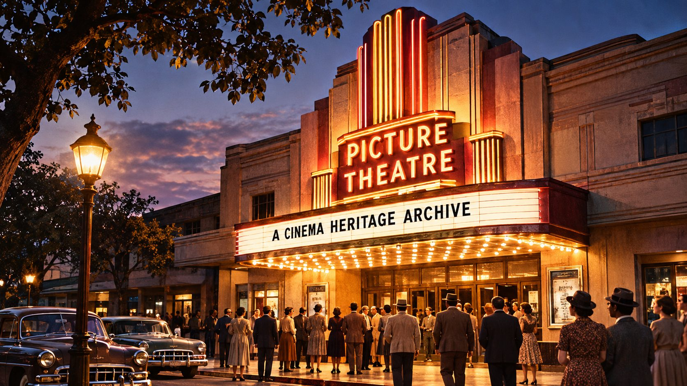

SponsoredSpecial event
Casablanca (1942) on 35mm
Saturday 28 November · 7:30 pm
Aurora Theatre, Ellisvale VIC · $16 adult, $12 concession

A national archive of cinema exhibition
A national archive of the cinemas, people and projection technology that brought the movies to Australia. Every fact shows its sources and how sure we are.
Try "Regent", "Toowoomba" or "Astor". Searches 73 genuine cinema records by name, former name, suburb, town, state and status.
AI-generated illustration, not a photograph. The Windsor Twin Cinema is not a real venue.
Real sites, cited sources
43 of the archive's 73 genuine cinema records are on the map: Brisbane (14), Sydney (7), Regional Queensland (12), Regional NSW (10). Zoom in or use the area buttons, then select a marker for its record: what the sources say, how sure we are of the location and where each fact comes from. Every cinema record on the map is also in the list below the map. The map also shows 5 archive listings as navy address points (where the listed address is today, not the historic building), and every other cinema we can place in its town or suburb as an approximate marker with a dashed ring. Approximate markers and unverified research leads can be switched off with the boxes on the map.
One finger scrolls the page. Pinch to zoom, or turn on Move the map.
Status today
Location confidence
20 more genuine records are in Explore cinemas and the research table but not on the map: 7 because no placeable location has been found, and 13 (including all 5 Melbourne cinemas) because the licence or provenance of their coordinates is still being reviewed. Heritage-listed sites use licensed government coordinates (Property address Queensland; NSW State Heritage Register centroids). Approximate markers sit at the Natural Earth point for the city centre, not at the building.
Browse the archive
Outlines are drawn from Natural Earth boundary data (public domain), simplified for small sizes.
Cinema Community
Screenings and events from verified cinemas. Choose a state; we never use your precise location unless you ask.
Sample listings: fictional cinemas. This shows how the planned Cinema Community feature will look. It is not active, and these cinemas and screenings are not real.
Saturday 28 November · 7:30 pm
Aurora Theatre, Ellisvale VIC · $16 adult, $12 concession
Saturday 28 November · 8:15 pm
Ironbark Drive-In, Quolla Bay NSW · $35 per car
Sunday 29 November · 2:00 pm
Aurora Theatre, Ellisvale VIC · $14 adult
Tuesday 1 December · 11:00 am
Banksia Heights Cinema Centre, Banksia Heights WA · $9
Friday 4 December · 6:30 pm
Banksia Heights Cinema Centre, Banksia Heights WA · $22
No verified cinemas have listed screenings in this state yet.
Sample listings from the archive’s fictional demonstration cinemas. Each cinema is responsible for its own listings; tickets are sold on the cinema’s own site.

Why this archive exists
Behind every marquee are the people who built it, ran it, projected the films and queued on the footpath. The archive gathers those stories, with the evidence for each one.
From the archive
Four genuine records, each with its dated events, sources and how sure we are. Explore all 73.
Brisbane City, QLD (Queensland)
Opened 1929 · Building survives, other use
Sydney, NSW (New South Wales)
Opened 1929 · Building survives, other use
Malanda, QLD (Queensland)
No opening date recorded; see the dated events · Operating cinema
Grafton, NSW (New South Wales)
Opened 1926 · Building survives; current use not checked
Projection and technology
The machines, formats and systems that brought films to Australian audiences.
From hand-cranked machines to 70mm projectors.
35mm, 16mm, 70mm and more.
Optical, magnetic and multi-channel sound.
Carbon arc, incandescent and xenon lamps.
Research in progress
When published sources give different dates, the archive shows both and says which source says what. These are genuine examples from the records.
Opening day: 9 July (Cinema Treasures) or 17 July 1926 (Wikipedia); a government page gives July 1926
Arson date: 26 December 2002 (Wikipedia) or 2004 (Brisbane City Council and Cinema Treasures).
Astor remodelling: 1924 (Wikipedia) or 1938 (Cinema Treasures, naming architect George Rae).